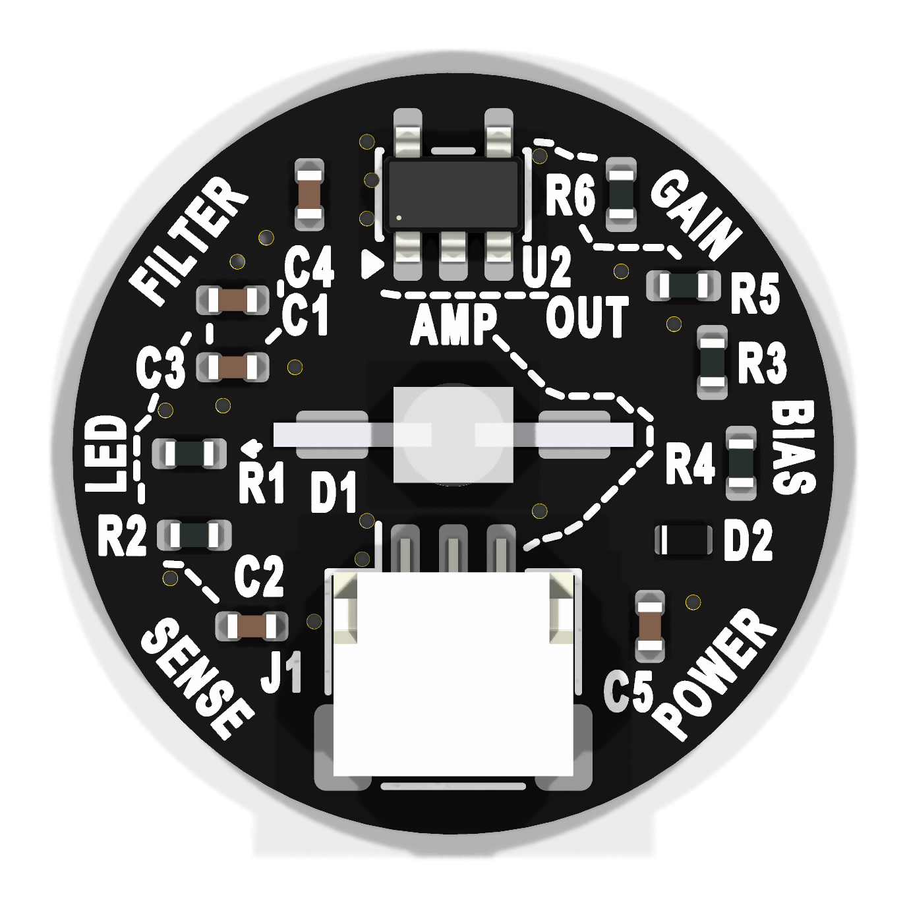

Native JST board candidate · black mask / white silk · 15.875 mm diameter

Open native PCB · Electrical schematic · Visual breadcrumb trail · Manufacturing review ZIP
The LED illuminates tissue. U1 detects the reflected light; R2 turns its output current into a voltage. C2/C1/C3/C4 filter the changing signal, and R5/R6/U2 amplify it around the reference set by R4/R3. J1 carries the analog output to your controller.
The LED has a separate electrical branch: supply → D1 → R1 → ground. The small solid arrow shows conventional current on the LED-to-R1 connection. Dotted lines show logical signal connections, with gaps for legibility; they do not mean DC current flows through the filter capacitors. D2 protects the sensor/amplifier supply branch and C5 bypasses supply noise.
The compact board carries references and group labels. This companion provides the full plain-language explanations.
| Ref | Component | What it does |
|---|---|---|
| D1 | Green LED | Illuminates the skin. The solid arrow shows conventional current from the LED cathode toward R1. |
| R1 | LED resistor | Limits LED current and sets brightness. |
| U1 | APDS-9008 light sensor | Detects reflected light and produces a light-dependent current. |
| R2 | 12 kΩ resistor | Converts sensor output current into a voltage. |
| C2 | 4.7 µF capacitor | Couples changes in the sensor voltage into the filter. |
| C1 | 4.7 µF capacitor | Shunts higher-frequency changes at the first filter node toward ground. |
| C3 | 4.7 µF capacitor | Couples the first filter node to the second filter node. |
| C4 | 2.2 µF capacitor | Filters the second node relative to the reference voltage. |
| R5 | 10 kΩ resistor | Feeds the filtered signal into the amplifier’s inverting input. |
| R6 | 3.3 MΩ resistor | Feeds output back to the inverting input; works with R5 to set gain. |
| U2 | MCP6001 amplifier | Amplifies the filtered signal around the reference voltage. |
| R4 | 100 kΩ resistor | Connects supply to the reference node; upper half of the bias divider. |
| R3 | 100 kΩ resistor | Connects the reference node to ground; lower half of the bias divider. |
| C5 | 2.2 µF capacitor | Bypasses supply noise to ground. |
| D2 | Schottky diode | Provides reverse-polarity protection for the sensor and amplifier supply branch. |
| J1 | JST connector | Pin 1 ground; pin 2 supply; pin 3 analog pulse signal. |
All 16 comparison checks passed, with zero unconnected nets, no schematic mismatches and clear ERC. D1, U1, connector position, board outline and all pad geometries are preserved. Twelve parts were rearranged to make the educational layout possible.
{kind=link}
{kind=link}